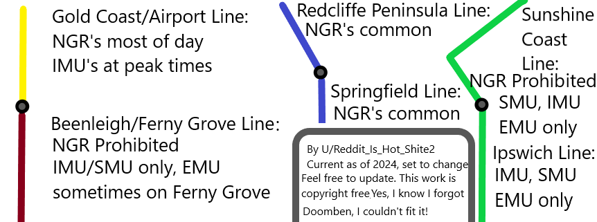

The only line you’ll semi regularly get an EMU is Ferny grove Gold Coast only does NGR’s, Ipswich is sunshine coast’s pair so will get IMU’s/SMU’s (you may have some luck with rosewood though), Redcliffe/springfield is mostly NGR’s and rarely EMU’s when it’s not Cleveland would be your next best bet but EMU’s are even rare on them
Going to note you here: - GC Gets peak IMU's. - Cleveland is swamped with NGRs. - GC gets like 3 IMU’s per day, my point is you won’t get an EMU on the Gold Coast
Yes Cleveland is still mostly NGR’s but that’s your second best bet behind Ferny grove (unless you count rosewood as its own line)
EMU’s aren’t common anymore